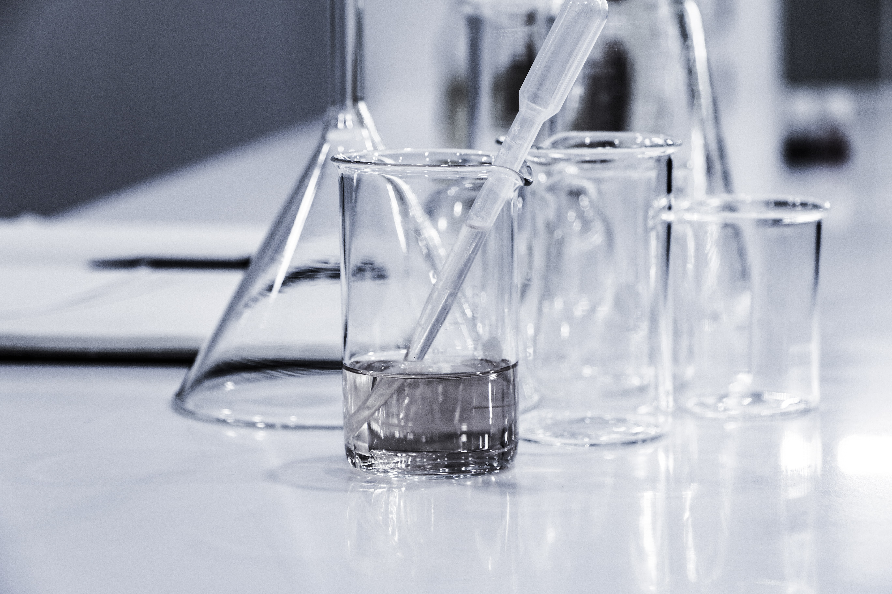

Hi-tech range for every application
Quality rivalling international standards
Thiasil Fused Silica Laboritory Wares are manufactured from indigenous raw material using a unique process developed in India. Since its inception Thiasil has always endeavored to perform at elevated levels of capability, owing to sound research development and timely upgradation of technology undertaken by us.
Rigorously tested and widely used
Thiasil products have been tested and are used by several leading research institutions, quality control laboritories, industrial testing and analytical laboritories all over India. Each product is individually oxy-gas fired and rigorously tested, consequently resulting in slight variation in shape but ensuring high purity and performance.
Learn more →


Coefficient of Expansion
Miniscule Coefficient of Expansion of only 0.6 x 10-6 per 0 celsius.
Chemical Resistance
Inert to most substances except alkalies, phosphate and fluorine compounds at an elevated temperature.
Heat Resistance
High tolerance for heat for upto temperature 10500 celsius.
Electric Resistance
High Di-electric constant and consequently high electric resistance even at elevated temperatures.